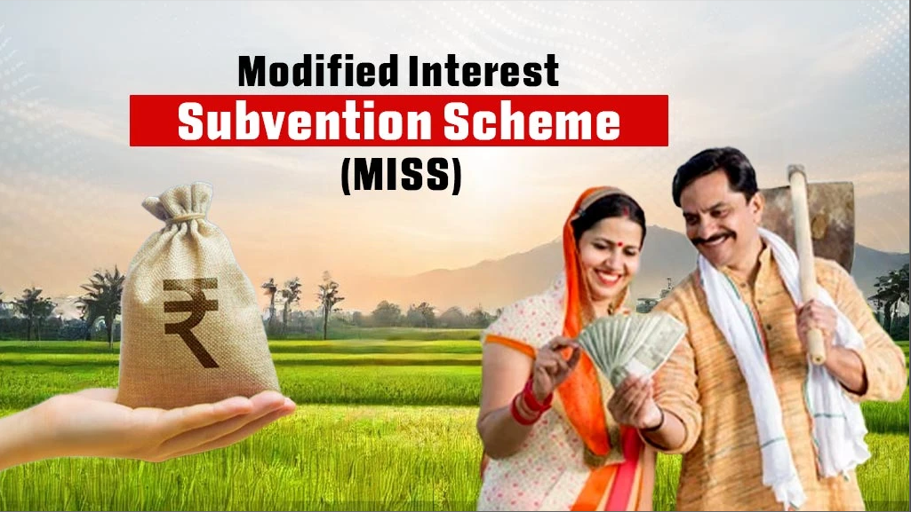

Launched in 2006-07, the Modified Interest Subvention Scheme or MISS is another very famous central government scheme for Indian farmers that aims to provide short credits or loans at an affordable interest rate. It aims to reduce the farmer suicide rate in ID due to a lack of credit or high interest rates.
○ Farmers can get a loan of up to INR 3 Lakhs at a reduced rate of 7%.
○ If farmers do prompt repayment, they can avail a 3% incentive.
○ It is also available for allied services such as Animal Husbandry, dairy, Poultry, and fisheries.
○ Every small-scale farmer engaged in farming and allied services can avail of this service.
○ All the small and marginal farmers of India.
○ Farmers can apply for the Modified Interest Subvention Scheme (MISS) with the help of assigned Public Sector Banks, Private Sector Banks, Small Finance Banks, Regional Rural Banks, Cooperative Banks, and Computerized Primary Agricultural Credit Societies (PACS).